Dataset: HPRC 67 samples merged with Sniffles, run with TRF, filtered to generate novel tandem repeats.
Catalog of every plot and table produced by analyze_novelty.py.
For methodology decisions, caveats, and the full analysis log, see data_summary_notes.md.
known, novel_motif, or novel_locus. The two methods agree only 73.5% of the time and are reported side by side throughout.(chrom, ins_coord), not SVID — 261 unique SVIDs map to only 229 unique positions within novel_locus.Stacked bar chart, one panel per novelty method (UCSC, TRExplorer), showing pooled raw TR-call counts per ancestry group broken down by novelty category. Each bar is annotated with its group's sample count.
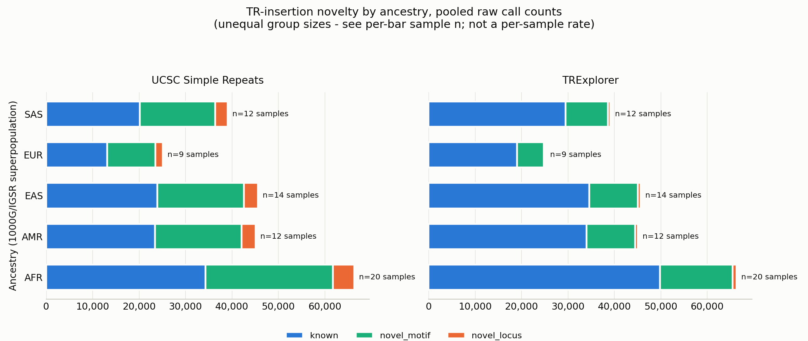
Distinct loci (chrom:ins_coord) per ancestry group × novelty method. Not additive across populations: a locus carried by samples from more than one group is counted once per group.
| novelty_source | population | n_samples | known_n_loci | novel_locus_n_loci | novel_motif_n_loci |
|---|---|---|---|---|---|
| ucsc_novelty | AFR | 20 | 7,099 | 689 | 5,480 |
| ucsc_novelty | AMR | 12 | 4,771 | 446 | 3,649 |
| ucsc_novelty | EAS | 14 | 4,614 | 448 | 3,473 |
| ucsc_novelty | EUR | 9 | 3,876 | 390 | 3,042 |
| ucsc_novelty | SAS | 12 | 4,513 | 441 | 3,540 |
| trexplorer_novelty | AFR | 20 | 10,045 | 162 | 3,045 |
| trexplorer_novelty | AMR | 12 | 6,697 | 104 | 2,060 |
| trexplorer_novelty | EAS | 14 | 6,512 | 103 | 1,920 |
| trexplorer_novelty | EUR | 9 | 5,536 | 90 | 1,673 |
| trexplorer_novelty | SAS | 12 | 6,406 | 111 | 1,958 |
Whole dataset, all three novelty categories combined — not ancestry-specific.
Distribution of motif_length (bp): 1-6bp on a linear axis (where nearly all calls live) and 7bp+ on a linear axis, showing the true right-skew shape (sharp peak ~20-40bp, long tail to 392bp).
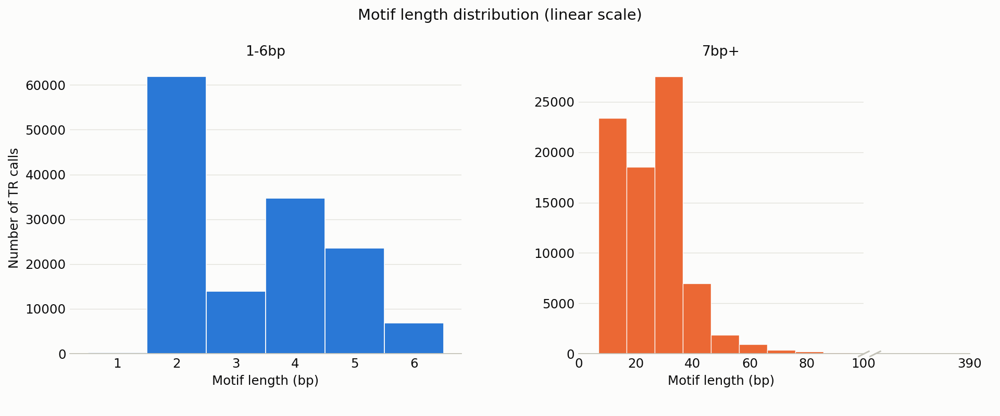
Repeat tract length (rep_length, bp) and copy number (rep_units), both log-binned. Tract length peaks ~60-150bp; copy number peaks ~20-40 repeats.
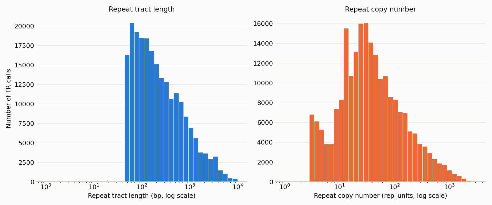
purity (TRF's measure of repeat-motif match quality) and insertion_purity (fraction of insertion that is repeat sequence). Purity is floored at 0.800 by an upstream filter — that's a real cutoff, not truncated data.
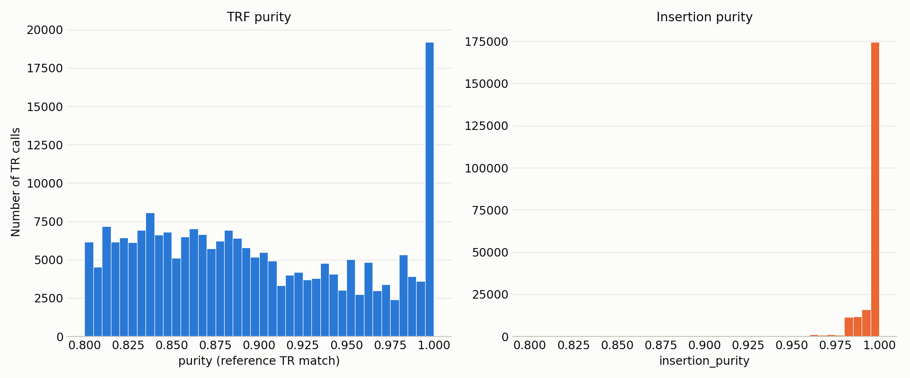
Most frequent canonical_motif values ranked by distinct loci. AT dominates; some motifs recur heavily at few positions while others spread thinly across many.
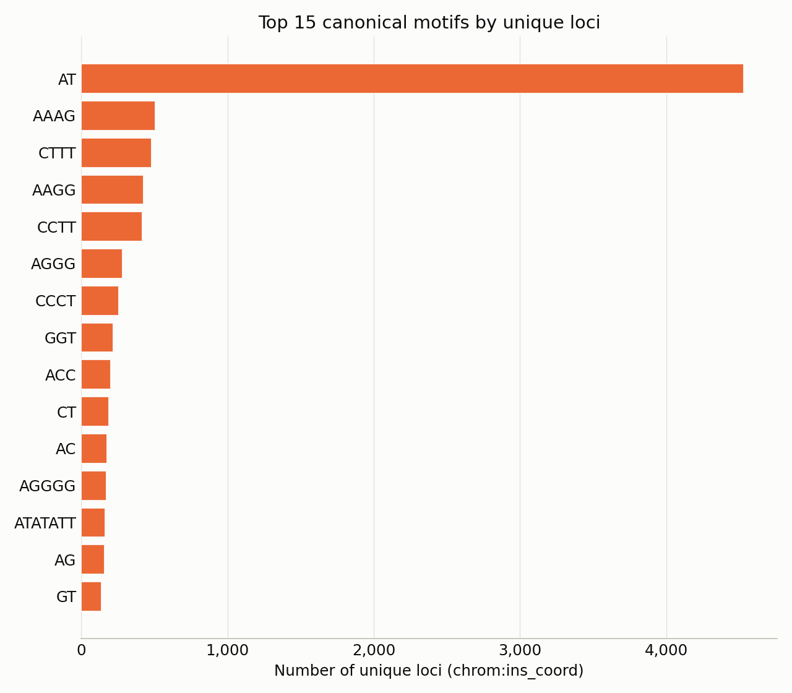
Whole-dataset novelty proportions (donut), UCSC vs TRExplorer side by side.
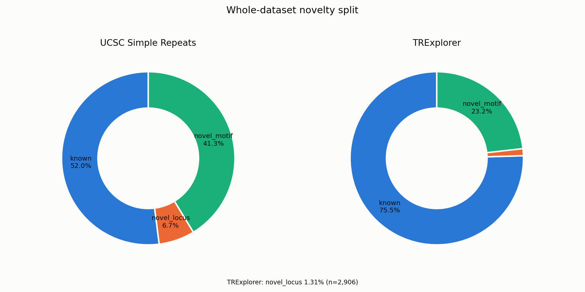
Raw TR-call counts per chromosome (chr1-22, X, Y). Roughly tracks chromosome length; chrY is low because not all 67 samples are male.
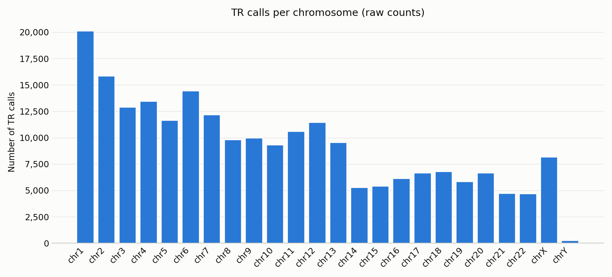
repeat_coverage — the fraction of each insertion's sequence explained by the identified repeat. Strongly right-skewed toward 1.0.
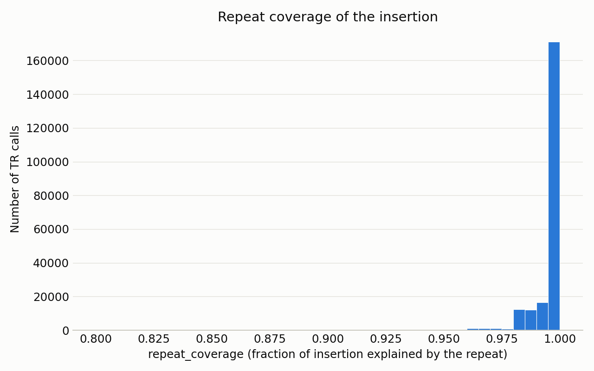
novel_locus deep dive (TRExplorer)TRExplorer's novel_locus category: 2,906 calls across 229 unique loci — positions TRExplorer's reference catalog doesn't contain at all.
| metric | known | novel_locus | novel_motif |
|---|---|---|---|
n_calls | 167,082 | 2,906 | 51,381 |
pct_of_total | 75.48 | 1.31 | 23.21 |
n_unique_samples | 67 | 67 | 67 |
n_unique_loci | 13,450 | 229 | 4,080 |
n_unique_canonical_motif | 2,743 | 155 | 2,760 |
motif_length_mean | 8.2 | 15.2 | 20.5 |
motif_length_median | 4.0 | 5.0 | 20.0 |
purity_mean | 0.893 | 0.887 | 0.902 |
purity_median | 0.882 | 0.873 | 0.901 |
insertion_purity_mean | 0.995 | 0.983 | 0.996 |
rep_length_mean | 449.6 | 844.9 | 675.4 |
rep_length_median | 154.0 | 217.0 | 307.0 |
rep_units_mean | 110.6 | 150.6 | 50.7 |
rep_units_median | 37.0 | 27.0 | 20.0 |
repeat_coverage_mean | 0.995 | 0.973 | 0.994 |
depth_mean | 38.7 | 43.1 | 40.6 |
depth_median | 36.0 | 36.0 | 36.0 |
Key contrasts vs known: novel_locus repeat tracts run longer (median 217bp vs 154bp) with slightly lower purity (0.887 vs 0.893). Top motifs skew toward longer/more complex sequences. The top recurrent locus (chr7:62,272,393, ATTTC motif) appears in 65 of 67 samples.
Top 10 loci by number of samples carrying them within novel_locus.
| locus | canonical_motif | motif_len | n_samples | n_calls |
|---|---|---|---|---|
chr7:62272393 | ATTTC | 5 | 65 | 65 |
chr16:34066322 | AATGG | 5 | 64 | 91 |
chr3:37708652 | AACAAGGAATTATCCAACAATGCACAGGACAGCTCCCCACAC | 42 | 61 | 149 |
chr3:28238930 | AATAT | 5 | 58 | 116 |
chrX:128469427 | AT | 2 | 53 | 106 |
chr4:14726288 | ACATTT | 6 | 50 | 97 |
chr1:108689608 | AT | 2 | 50 | 90 |
chr13:24052836 | C | 1 | 48 | 96 |
chr10:2562627 | ACATATATAT | 10 | 44 | 70 |
chr9:121895759 | GT | 2 | 44 | 87 |
Histogram + boxplot of sequencing depth per call. 292 of 2,906 calls fall outside the whiskers; one extreme case hits 5,730x (median 36x), flagging likely repetitive/multi-mapping regions.
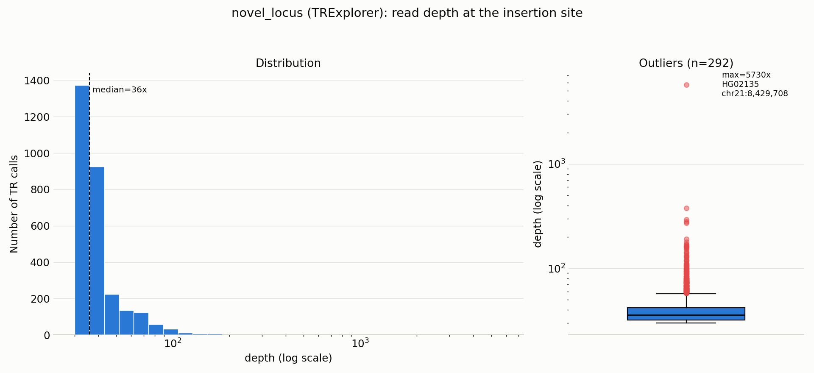
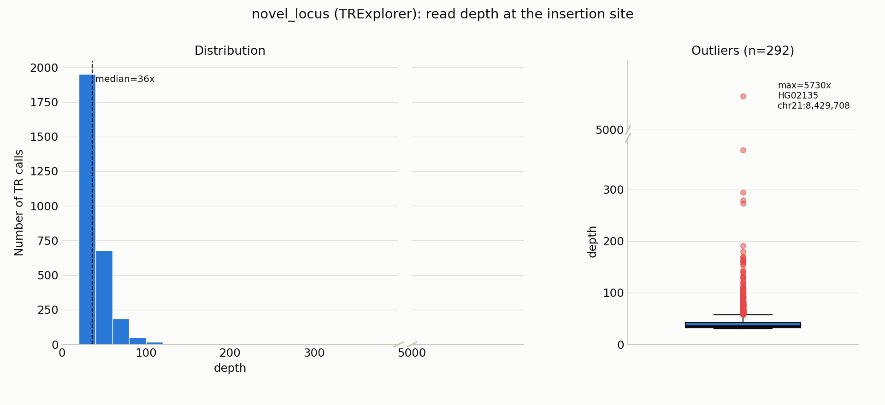
Depth aggregated per locus (median depth per unique position). Depth outliers concentrate among low-recurrence loci; loci shared across 40-65 samples all sit at normal depth (~30-50x). Supports treating outliers as technical artifacts.
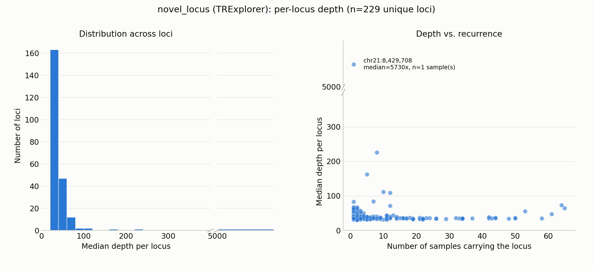